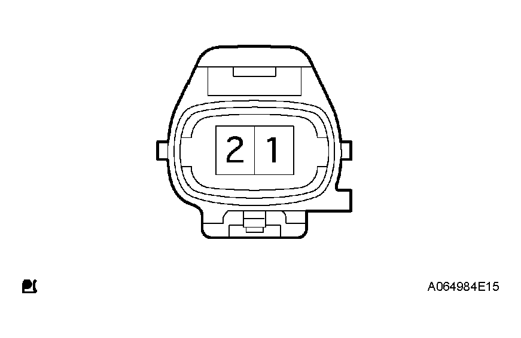

Inspection Procedure
HINT:
Read freeze frame data using the intelligent tester. Freeze frame data records the engine condition when malfunctions are detected. When troubleshooting, freeze frame data can help determine if the vehicle was moving or stationary, if the engine was warmed up or not, if the air-fuel ratio was lean or rich, and other data from the time the malfunction occurred.
- INSPECT CAMSHAFT POSITION SENSOR (RESISTANCE)
- Disconnect the C1 Camshaft Position (CMP) sensor connector.
- Measure the resistance between terminals 1 and 2.
Standard resistance
TESTER CONNECTION - SPECIFIED CONDITIONTester Connection Specified Condition 1 - 2 1,630 to 2,740 Ω at cold 1 - 2 2,065 to 3,225 Ω at hot 
Courtesy of © TOYOTA, LICENSE AGREEMENT TMS1002HINT:
The terms cold and hot refer to the temperature of the sensor. Cold means approximately -10 to 50°C (14 to 122°F). Hot means approximately 50 to 100°C (122 to 212°F).
NG: REPLACE CAMSHAFT POSITION SENSOR
OK: Go to Next Step
- CHECK HARNESS AND CONNECTOR (CAMSHAFT POSITION SENSOR - ECM)
- Disconnect the C1 CMP sensor connector.
- Disconnect the E5 ECM connector.
- Measure the resistance of the wire harness side connectors.
Standard resistance (Check for open)
TESTER CONNECTION - SPECIFIED CONDITIONTester Connection Specified Condition G2+ (C1-1) - G2+ (E5-26) Below 1 Ω NE- (C1-2) - NE- (E5-34) Below 1 Ω Standard resistance (Check for short)
TESTER CONNECTION - SPECIFIED CONDITIONTester Connection Specified Condition G2+ (C1-1) or G2+ (E5-26) - Body ground 10 kΩ or higher NE- (C1-2) or NE- (E5-34) - Body ground 10 kΩ or higher
NG: REPAIR OR REPLACE HARNESS OR CONNECTOR
OK: Go to Next Step
- CHECK SENSOR INSTALLATION (CAMSHAFT POSITION SENSOR)
- Check the CMP sensor installation.
OK: Sensor is installed correctly.
NG: SECURELY REINSTALL SENSOR
OK: Go to Next Step
- Check the CMP sensor installation.
- CHECK CAMSHAFT (TEETH OF PLATE)
- Check the teeth of the camshaft.
OK: Camshaft teeth do not have any cracks or deformation.
NG: REPLACE CAMSHAFT
OK: REPLACE ECM
- Check the teeth of the camshaft.